Префектура Нара · Асука · история
Деревня Асука: родина принца Сётоку и место, где начиналась Япония
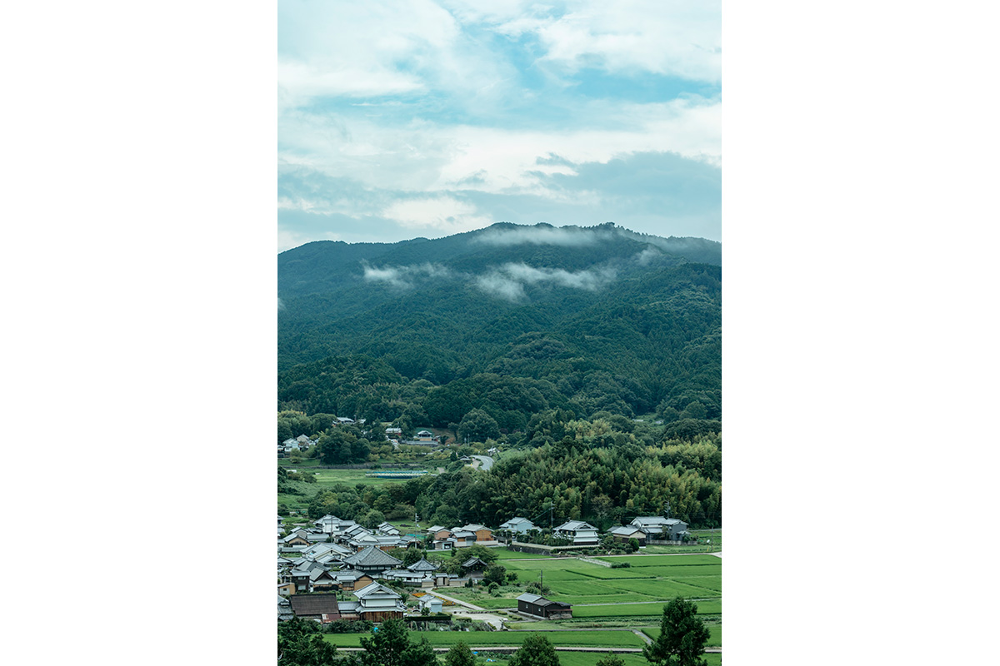
Больше ста лет, с 592 года, в долине Асука стояли дворцы японских правителей, и здесь страна получила свои первые законы, чиновников и храмы. Сегодня это тихая деревня среди рисовых полей, где каменные загадки VII века лежат прямо у дороги.
Деревня
Асука: «родина души» японцев
Деревня Асука лежит на юго-восточном краю равнины Нара. С 592 года и до переноса столицы в Хэйдзё-кё, будущий город Нара, в 710 году здесь стояли дворцы правителей. Этот век с небольшим называют периодом Асука, и именно тогда у Японии появились основы государства.
Выйдя на станции Асука, первым делом замечаешь зелень рисовых полей и деревьев. Высоких зданий нет, поэтому небо кажется огромным, а линии гор видны отчётливо. Воздух чистый, и голова сама собой проясняется.
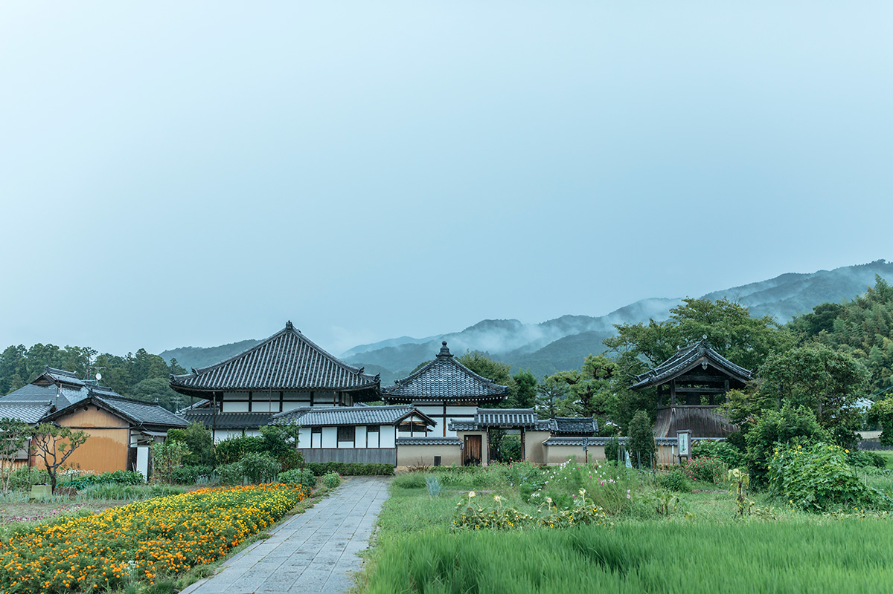
Пейзаж здесь сохранился не случайно. В 1980 году вышел особый закон о деревне Асука, который ограничил строительство, и благодаря ему вид долины почти не изменился с древности. Глава деревни называет Асуку «родиной души» японцев: природа, которую видели люди периода Асука, успокаивает и придаёт сил, а обычаи и обряды напоминают, как здесь веками жили бок о бок с землетрясениями и тайфунами.
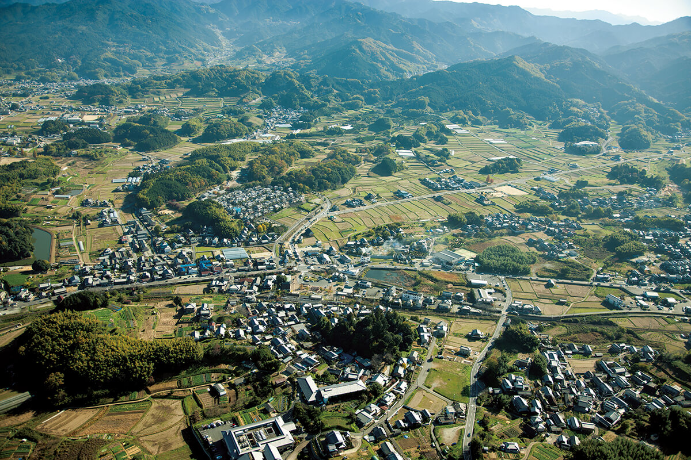
Начать стоит с холма Амакаси-но ока в центре долины. С вершины видна вся деревня, а на рассвете вид особенно красив. Отсюда же видны три горы Ямато: Миминаси, Унэби и Ама-но Кагуяма, о которых слагали стихи ещё в древности.
Асука и Асука: два написания
У названия деревни два написания иероглифами, и оба встречаются уже в древнейших хрониках и в «Манъёсю». По одной версии, к названию Асука в стихах прибавляли постоянный эпитет «тобутори», «летящая птица», и со временем его иероглифы тоже стали читать как «Асука». Деревня долго писала своё имя иероглифами «летящей птицы». В 1956 году, когда три деревни объединились, новая деревня вернулась к древнему варианту записи.
Смотровая площадка на холме Амакаси-но ока
- Адрес
- префектура Нара, уезд Такэти, деревня Асука, Тоюра
- Часы работы
- свободный доступ
- Цены / Вход
- бесплатно
История
Как Асука стала государством
Понять эпоху Асука невозможно без Китая. Около 600 года японское посольство отправилось ко двору императора Вэнь-ди из династии Суй (541–604), но приёма не добилось. По преданию, послам дали понять, что страна у них незрелая, а управление никуда не годится. Вместе с тем блеск суйской столицы и новогодних церемоний произвёл на послов сильное впечатление, и по возвращении в Японии многое пришло в движение.
Чтобы навести порядок в управлении, двор переехал во дворец Охарида-но мия, где можно было и вести дела, и проводить церемонии. Затем ввели «двенадцать ступеней шапок», первую систему чиновничьих рангов, и приняли «Конституцию из семнадцати статей». Ранги появились в 603 году, а конституция в 604-м: легко представить, в какой спешке всё делалось. Следом вышел указ о создании большой статуи Будды, а буддизм получил покровительство двора: страна старалась выглядеть цивилизованной. Примерно тогда же был достроен храм Хорюдзи.
В 607 году в Китай отправилось второе посольство. Посол Оно-но Имоко вёз письмо, где принц Сётоку назвал своего правителя «Сыном Неба страны, где восходит солнце», обращаясь к «Сыну Неба страны, где солнце заходит». Суйский император Ян-ди (569–618) был в ярости. Возможно, принц просто хотел показать, что Япония навела у себя порядок и теперь ждёт отношений на равных.
Тогда же произошло ещё одно «впервые». С 592 года и до смерти в 628 году страной правила императрица Суйко (554–628), первая женщина на троне в Восточной Азии. Женщин, оставивших след в эпохе, было много: императрица Когёку (594–661) строила каналы и плотины, императрица Дзито (645–703) довела до конца замыслы мужа, умершего, не успев их исполнить, а монахиня Дзэнсин первой из японок приняла постриг и уехала учиться за море.
Многое из того, что сегодня кажется в Японии само собой разумеющимся, началось именно здесь:
- название страны «Япония» и титул «тэнно», император;
- часы и календарь: первые водяные часы;
- чиновничий аппарат и устройство ведомств;
- подворные списки и адреса, которые писали на деревянных табличках;
- налоги, которые провинции платили своими продуктами;
- деньги: монеты фухонсэн;
- расцвет буддизма и храмы как центры международной культуры;
- первые хроники и поэтические сборники;
- росписи в курганах, следы связей с материком;
- города, дороги и сады с прудами.
Храм
Асука-дэра: Будда, который не сдвинулся за 1400 лет
С холма Амакаси-но ока путь лежит к храму Асука-дэра. Его основал в 596 году Сога-но Умако (?–626), глава могущественного рода, чьей вотчиной была Асука, и двоюродный дед принца Сётоку. Вместе с принцем он помогал императрице Суйко управлять страной. Это первый в Японии храм с полным набором построек.
От храма осталась лишь небольшая территория, но когда-то он был в 20 раз больше и превосходил размерами Хорюдзи: три золотых зала окружали пагоду. По сути это был большой буддийский центр, где изучали новейшие учения с материка, и молодой принц наверняка бывал здесь с горящими глазами. В XIII веке почти все постройки сгорели. Нынешние здания восстановлены в XVII–XIX веках, а главный зал стоит на месте бывшего центрального золотого зала.
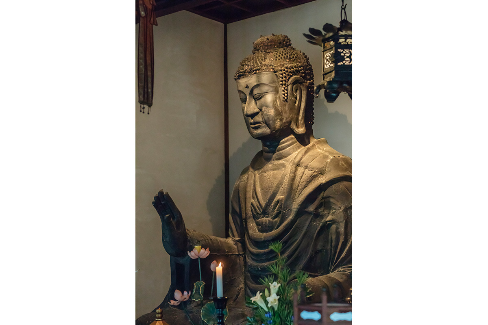
Статую в народе зовут «Великий Будда Асуки». Её отлил мастер Курацукури-но Тори, выходец из семьи переселенцев с материка и главный скульптор своего времени. Считается, что лицо и большая часть правой руки сохранились с тех пор, и в чертах лица хорошо видно влияние материка. Выражение у Будды строгое, но в нём есть и тепло.
«Статую создали в 609 году, и исследования показали, что за 1400 лет она ни разу не покидала этого места. Умако, принц и все остальные молились здесь же, на том же месте. Тогда люди страдали от оспы и других эпидемий, отец принца, император Ёмэй, тоже умер от болезни. Принц много думал о помощи слабым, так что наверняка молился здесь горячо»
настоятель храма Асука-дэра
Это легко соотнести с нашим временем, когда весь мир столкнулся с пандемией и заново ищет, как жить. Если присмотреться, видно, что Будда сидит, чуть повернувшись вправо. По словам настоятеля, он смотрит в сторону храма Татибана-дэра, места рождения принца. Может быть, молитвы принца тронули и самого Будду.
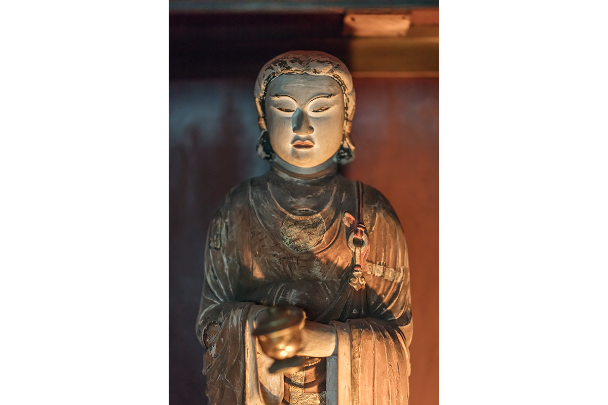
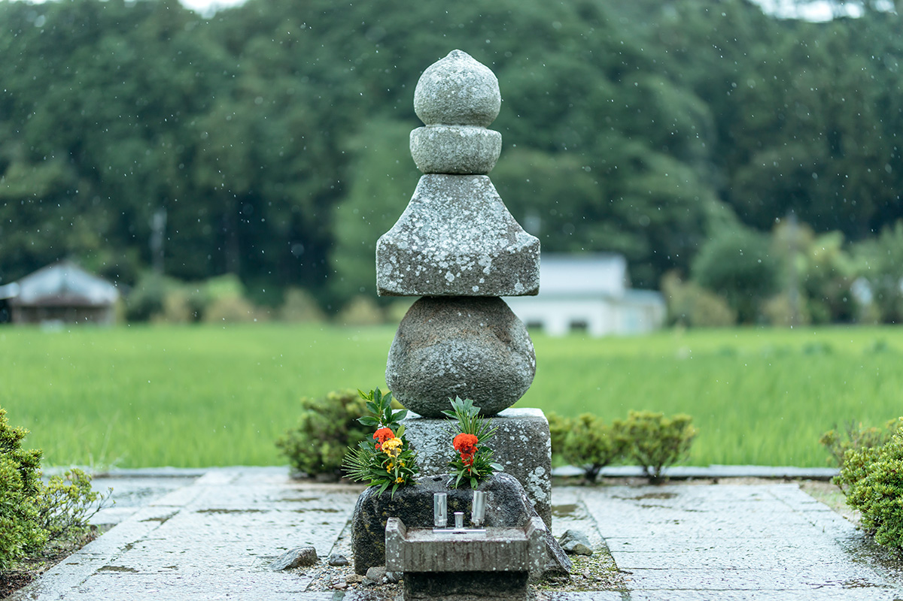
Храм Асука-дэра
- Адрес
- префектура Нара, уезд Такэти, деревня Асука, Асука, 682
- Телефон
- +81 744-54-2126
- Часы работы
- 9:00–17:30, с октября по март до 17:00, вход до 15 минут до закрытия
- Цены / Вход
- 350 иен, школьники средней и старшей школы 250 иен, младшей школы 200 иен
Храм
Татибана-дэра: где родился принц
Великий Будда Асуки словно сам подсказывает следующую остановку. Храм Татибана-дэра стоит там, где был загородный дворец деда принца, императора Киммэя (?–571), и, по преданию, здесь принц и родился. Его мать, проходя мимо конюшен дворца, почувствовала схватки и родила сына прямо там.
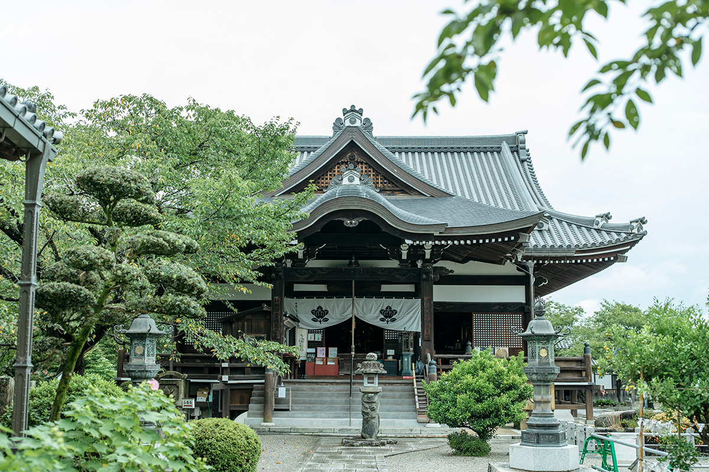
Храмом это место стало в 606 году, когда принцу было 35 лет. Он читал императрице Суйко толкование сутры «Сёман-гё», и, по легенде, с неба посыпались цветы лотоса, а тысяча голов Будды засияла светом. Татибана-дэра считается одним из семи храмов, основанных принцем Сётоку. В начале здесь стояло 66 построек, и о размахе напоминает уцелевший камень-основание пятиярусной пагоды. Сохранилась и запись о том, что знаменитый ковчег «Тамамуси-но дзуси», сокровище храма Хорюдзи, когда-то хранился здесь.
«Наш храм относится к школе Тэндай, но главная статуя изображает принца в тот самый момент. С давних времён почитание принца здесь выше различий между школами»
заместитель настоятеля храма Татибана-дэра
По его словам, в древней хронике «Нихон сёки» Татибана-дэра упомянут как женский монастырь. Похоже, рядом с принцем во все времена жили дух согласия и равенства.
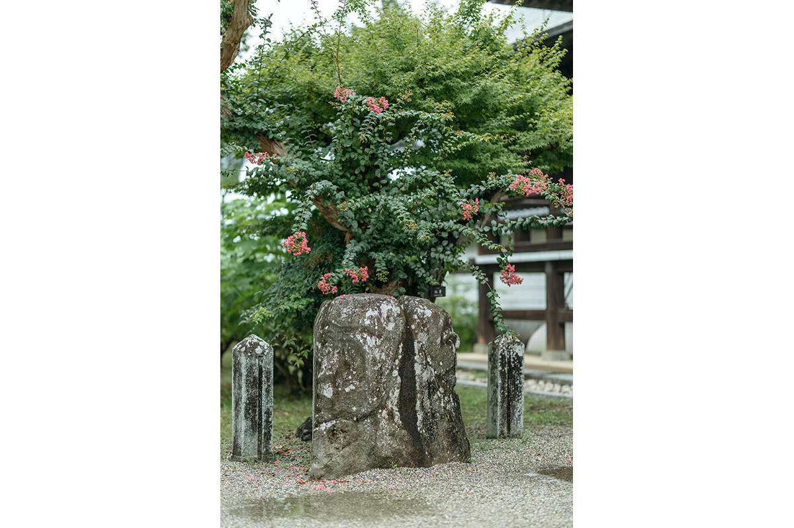
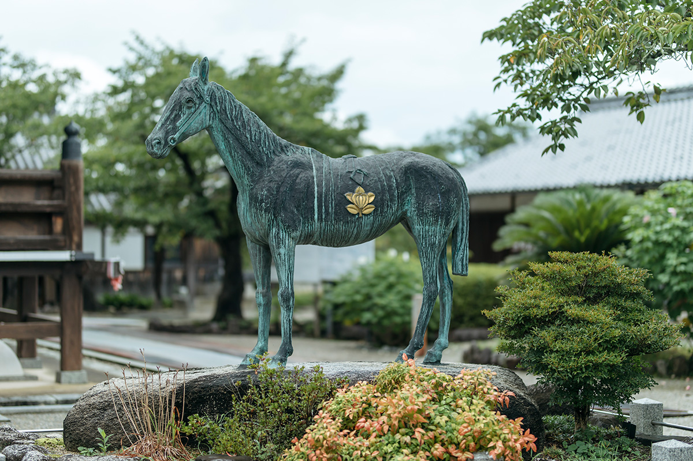
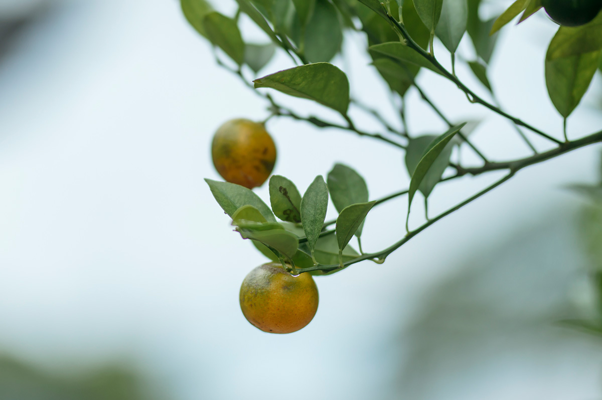
Храм Татибана-дэра
- Адрес
- префектура Нара, уезд Такэти, деревня Асука, Татибана, 532
- Телефон
- +81 744-54-2026
- Часы работы
- 9:00–17:00, вход до 16:30
- Цены / Вход
- 350 иен, школьники средней и старшей школы 300 иен, младшей школы 150 иен
Курган
Исибутай: каменная сцена
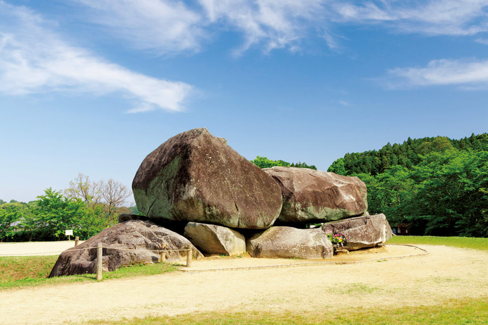
Последняя остановка: курган Исибутай. Это один из крупнейших квадратных курганов Японии, его построили в VI–VII веках. Земляная насыпь не сохранилась, и наружу вышла погребальная камера из 30 с лишним огромных камней общим весом 2300 тонн. Верхний камень камеры плоский, поэтому курган и назвали Исибутай, «каменная сцена». Камера уходит под землю, её высота около 5 м, длина около 8 м, и размах вместе с мастерством каменотёсов впечатляет.
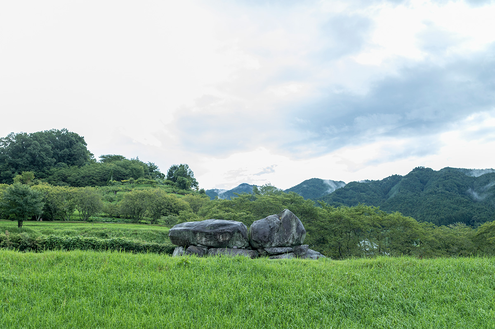
Скорее всего, здесь похоронен Сога-но Умако. Неподалёку, на раскопках Симаносё, нашли остатки его усадьбы, а для кургана снесли семь небольших более ранних насыпей. Почему земля исчезла, точно неизвестно. Одни говорят, что после переворота 645 года, когда род Сога пал, отомстить ему решили его противники. Другие считают, что позже насыпь просто разобрали для строительства.
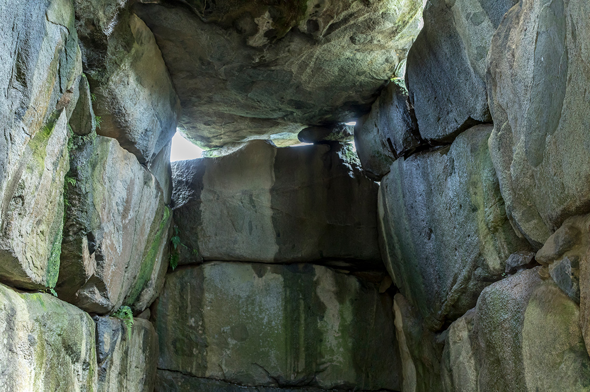
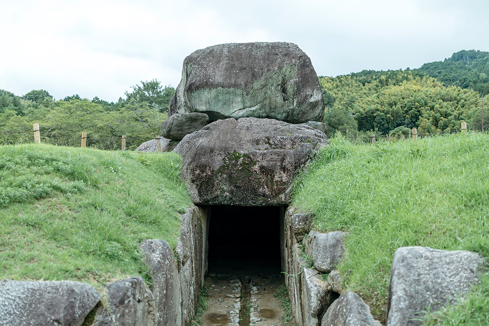
В деревне вообще много каменных скульптур периода Асука, и некоторые устроены сложно, как фонтаны. Возможно, это плоды материковых технологий и новшеств, которые принёс принц. Путешествуя по Асуке, замечаешь, что здесь рядом живут развитая городская культура и прекрасная природа, в которой, по японским верованиям, обитают бесчисленные боги. Буддизм, которому следовал принц, не вытеснял местные верования, а соединялся с ними и делал жизнь людей богаче.
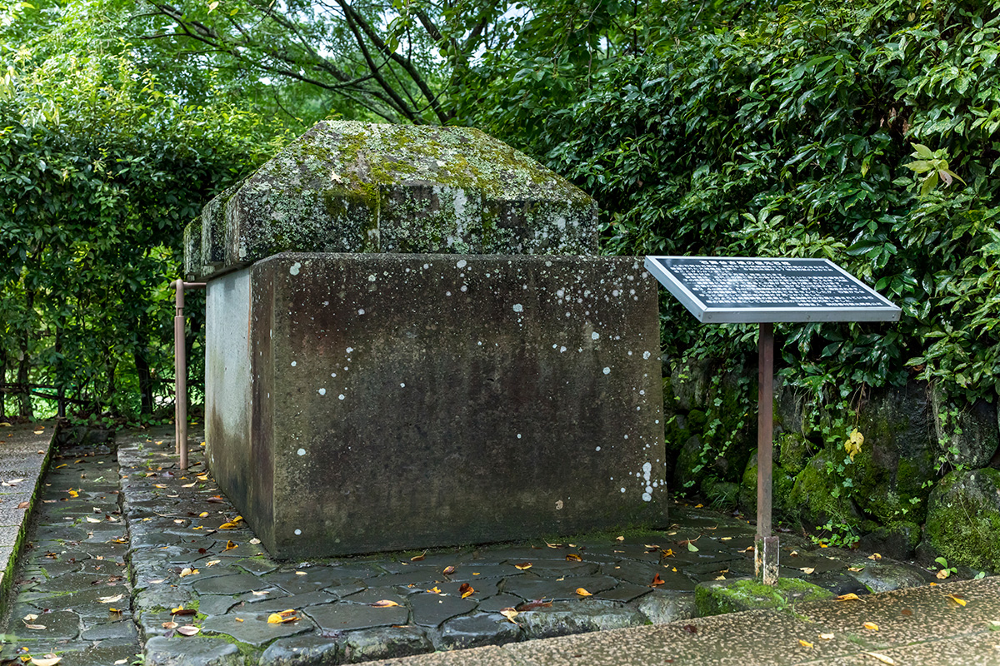
Курган Исибутай
- Адрес
- префектура Нара, уезд Такэти, деревня Асука, Симаносё, 254
- Часы работы
- 8:30–17:00
- Цены / Вход
- 300 иен, школьники старшей школы и младше 100 иен
Камэиси, загадочная черепаха
Камэиси, «камень-черепаха», одна из загадочных каменных скульптур Асуки: на огромной гранитной глыбе вырезано животное, похожее на черепаху. Одни считают, что камень отмечал границу владений храма Кавара-дэра, другие, что так поминали черепах тех времён, когда на месте долины Ямато было озеро. По легенде, если камень повернётся на запад, Ямато утонет в грязном море.
Камэиси
- Адрес
- префектура Нара, уезд Такэти, деревня Асука, Кавара
- Часы работы
- свободный доступ
- Цены / Вход
- бесплатно
Принц как продюсер
«О принце Сётоку чаще рассказывают легенды о сверхчеловеке, но если внимательно проследить историю, виден человек в натуральную величину. Ярче всего в нём черты талантливого продюсера: он занимался дипломатией и гибко вплетал в устройство страны культуру и порядки, которые узнавал за морем. Посмотрите, как точно он поставил дворец Икаруга между портом Нанивадзу, через который шла торговля с другими странами, и столицей Асука, и проложил дорогу, связавшую все три места. Чтобы не отстать от его замыслов, мы берегли наше историческое и природное наследие. Хочется, чтобы люди почувствовали всеми чувствами, какая передовая культура жила в этой деревне среди красивой природы, и нашли здесь мудрость для будущего»
глава деревни Асука
В 2021 году деревня вместе с соседями готовила заявку на включение «Дворцов и столиц Асуки и Фудзивары» в список Всемирного наследия ЮНЕСКО и рассчитывала на 2024 год.
Еда
Овощи с семейного поля и джелато с фермы
После прогулок по древностям можно отдохнуть за едой. Сотрудники туристической ассоциации Асуки, которые сами живут в деревне, рассказали, куда пойти.
Da terra: овощи в главной роли
Ресторан Da terra открылся весной 2020 года в родном доме шефа. Его гордость в овощах: около 100 видов за год шеф выращивает вместе с родителями на поле, которое семья хранит из поколения в поколение. Меню складывается из того, что собрали в этот день, и в каждой тарелке собраны запахи и вкус сезона. Блюда называют одним продуктом: «Свёкла», «Бамия», «Говядина Ямато». Такой подход неожиданно открывает вкус каждого продукта.
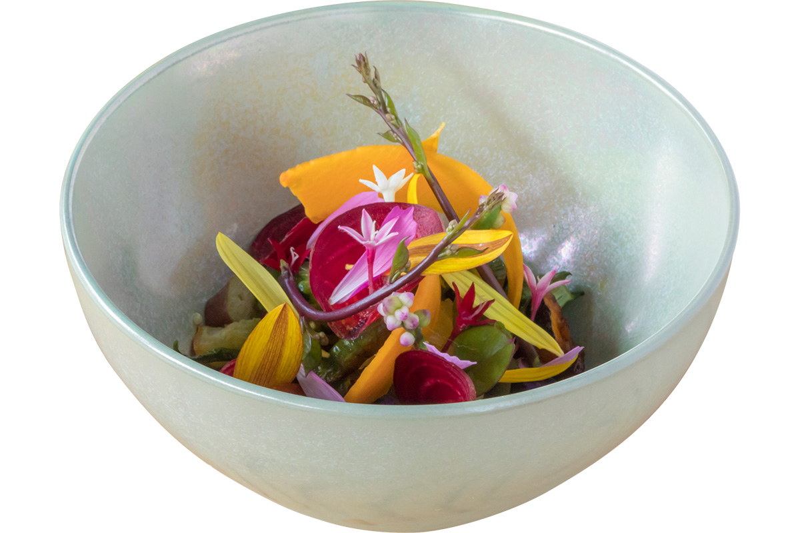
В 2021 году обеденный сет стоил от 4950 иен, ужин от 7150 иен. Подают только сеты, напитки отдельно, бронь обязательна.
Da terra
- Адрес
- префектура Нара, уезд Такэти, деревня Асука, Кавара, 884
- Телефон
- +81 744-41-9072 (бронь обязательна)
- Часы работы
- обед 12:00–15:00 (последний заказ 13:30), ужин 18:00–22:00 (последний заказ 20:00)
- Выходные
- среда, четверг
- Цены / Вход
- обед от 4950 иен, ужин от 7150 иен, только сеты, напитки отдельно
Matsuyama Cafe в бывшем складе кооператива
Кафе стоит в минуте ходьбы от станции Асука. Деревянному складу сельского кооператива около 80 лет, и хозяин сам перестроил его в место, где спокойно сидят и местные, и путешественники. Девиз кафе: местные продукты для местных. Обеды и фруктовые кексы готовят из того, что выросло в Асуке.
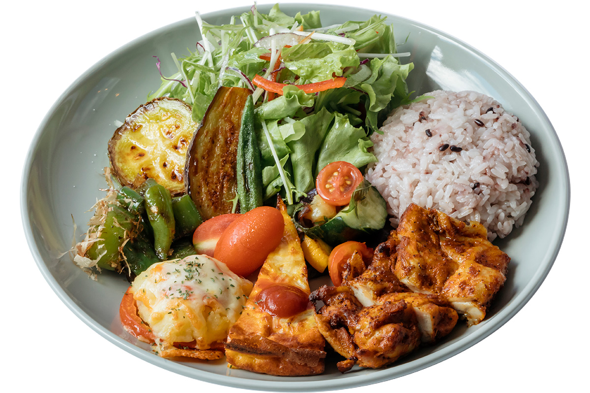
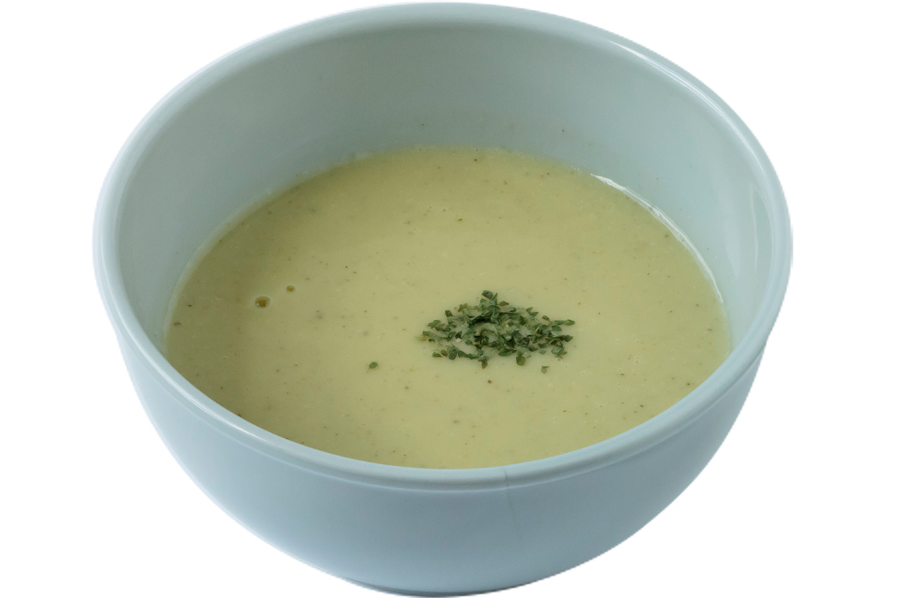
Matsuyama Cafe
- Адрес
- префектура Нара, уезд Такэти, деревня Асука, Коси, 2-1-1
- Телефон
- +81 744-35-1003
- Часы работы
- будни 11:00–17:00 (последний заказ 16:30), суббота, воскресенье и праздники 11:00–18:00 (последний заказ 17:30)
- Выходные
- среда, 2-й и 3-й вторник месяца
«Гэнкина кадзицу кобо»: джелато из своих фруктов
Хозяин этой джелатерии выращивает на собственной ферме дыни, виноград «шайн мускат» и другие фрукты, а для джелато берёт ещё и местную клубнику «Асука руби». Фрукты берут спелыми и только что сорванными, поэтому джелато получается сочным, с точным балансом сладости и кислинки.
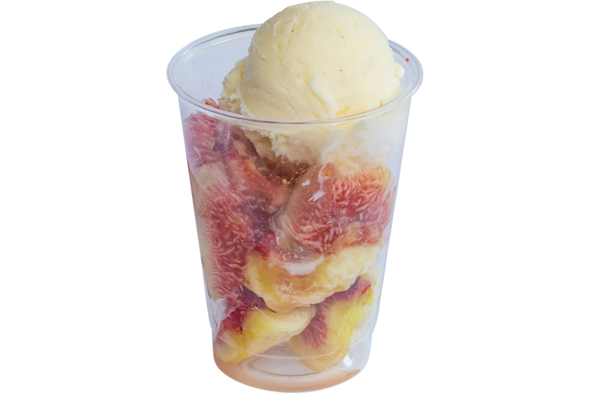
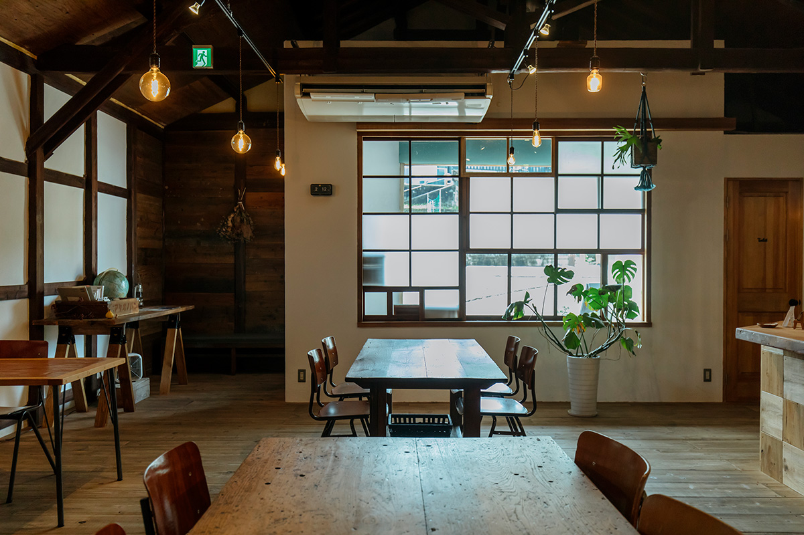
«Гэнкина кадзицу кобо»
- Адрес
- префектура Нара, уезд Такэти, деревня Асука, Асука, 207-7
- Телефон
- +81 90-4760-8907
- Часы работы
- 11:00–17:00 (с марта по ноябрь)
- Выходные
- понедельник–четверг (в праздники открыто), с декабря по конец февраля закрыто на зиму
Ночлег
«Асука юри-но сато Синрадзюку»: 31 час в старом доме
Дом стоит у подножия холма Икадзути-но ока, который тоже воспет в «Манъёсю», и принимает одну компанию в день. 80-летний деревенский дом перестроила местная строительная фирма, которой владеет хозяин гостиницы. Старые балки и земляной пол у входа оставили, и получилось просторное японское жильё, где можно провести 31 час: заезд в 9 утра, выезд в 4 часа дня.
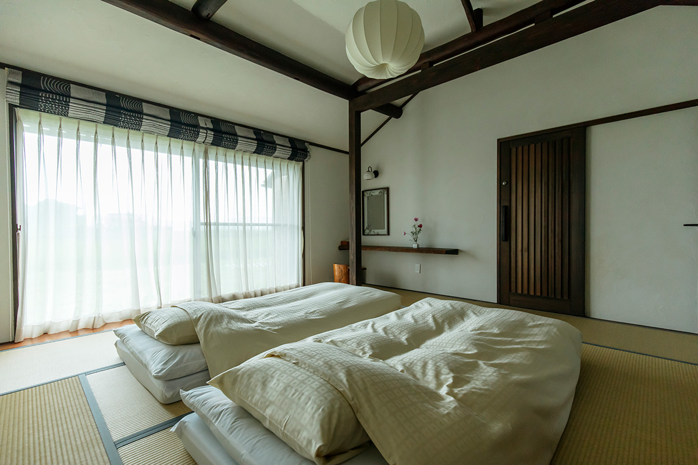
Пройдя под воротами, оказываешься в другом мире. Во внутреннем дворе устроена открытая веранда, а за комнатами северной стороны начинаются поля. Голоса птиц и насекомых, шум дождя заменяют музыку, и природу Асуки чувствуешь, не выходя из дома. Управляющий раньше работал в известных отелях, влюбился в Асуку и переехал сюда, его забота о гостях запоминается надолго. В 2021 году ночь стоила от 19 800 иен с человека с налогами и сервисом, без еды.
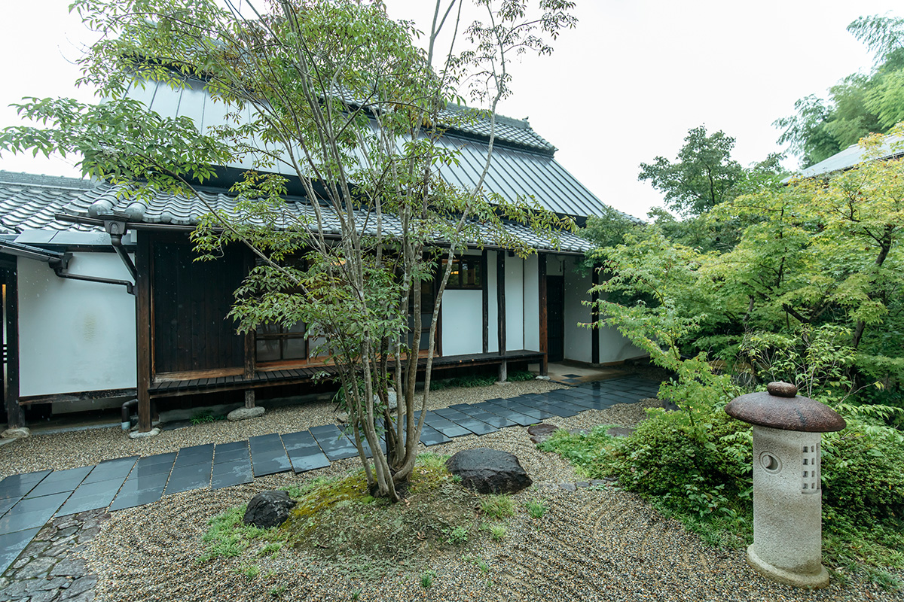
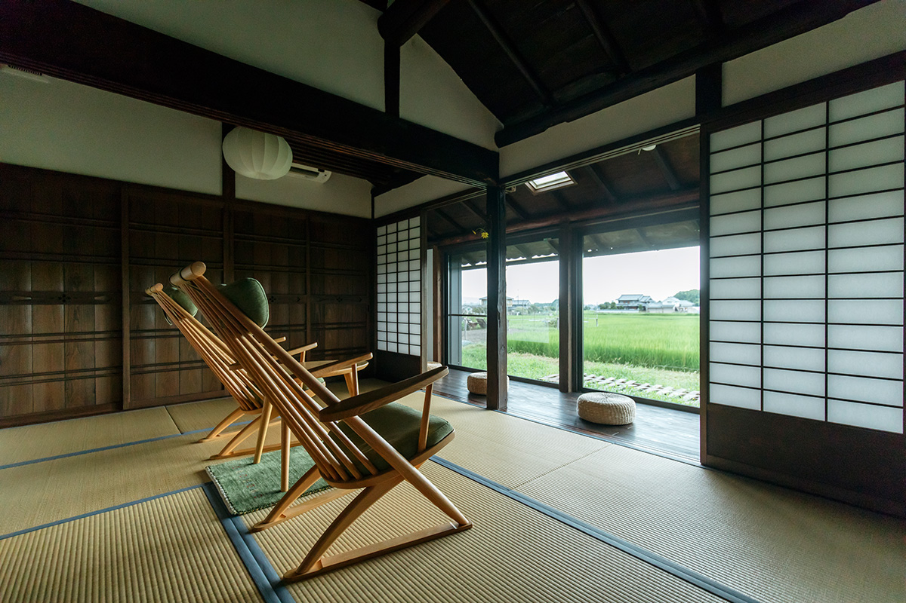
«Асука юри-но сато Синрадзюку»
- Адрес
- префектура Нара, уезд Такэти, деревня Асука, Икадзути, 35
- Телефон
- +81 120-957-087
- Номера
- дом целиком, до 6 человек
- Заезд / выезд
- 9:00 / 16:00
- Цены / Вход
- от 19 800 иен с человека за ночь с налогами и сервисом, без еды; карты AMEX, Diners, JCB, Master, VISA и другие
Сезоны
Ликорисы, свечи и полумарафон
Осенью символ местной природы, рисовые террасы Инабути, становится ярко-красным от ликорисов. На празднике ликорисов вдоль полевых дорог ставят самодельных пугал, и в 2021 году их конкурс проходил с голосованием в интернете.
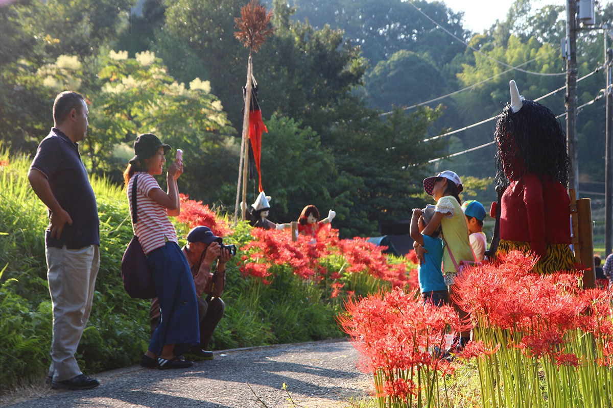
Ночью деревню освещает «Асука хикари-но кайро», «Коридор света Асуки»: свечи зажигают у храмов Асука-дэра и Татибана-дэра, у кургана Исибутай и по всей деревне. В 2021 году на него принимали только по предварительной записи.
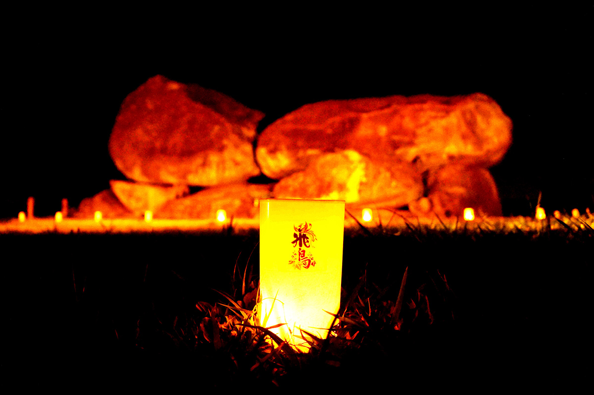
Ещё одна возможность увидеть старые места это Асука-полумарафон по пейзажам, которые японцы считают образом исконной Японии. Первый забег прошёл 13 марта 2022 года.
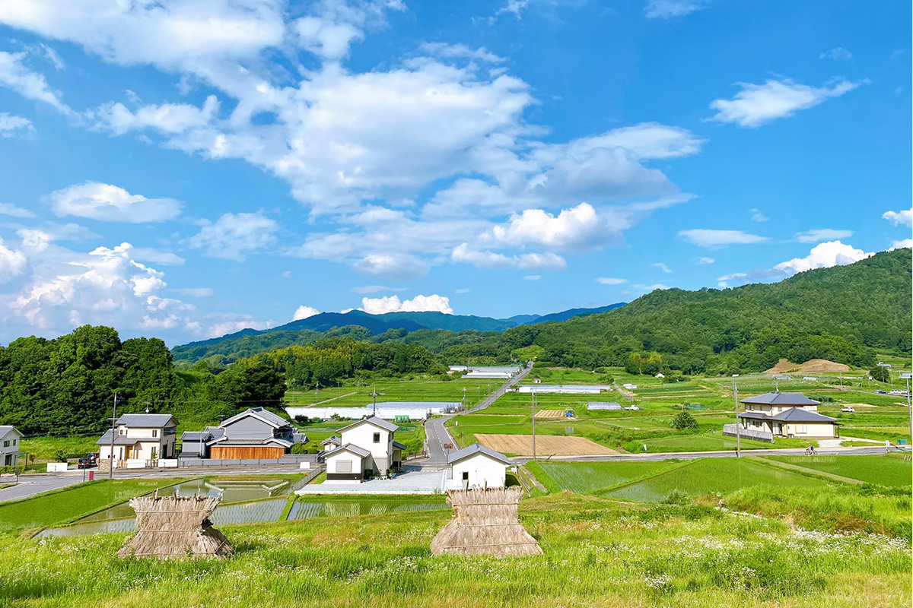
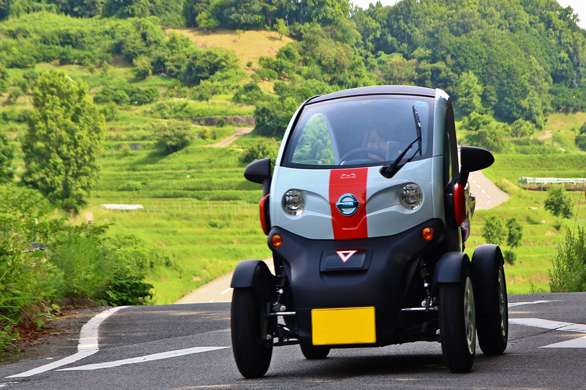
Как добраться до деревни Асука
- Как добраться
- из Осаки на поезде Кинтэцу от станции Осака-Абэнобаси до станции Асука около 45 минут, на машине от развязки Ямато-Корияма скоростной дороги Ниси-Мэйхан около 60 минут. Из Киото на поезде Кинтэцу от станции Киото через Касихара-дзингу-маэ до станции Асука около 1 часа 15 минут, на машине через Нару до развязки Ямато-Корияма около 15 минут. Из Нагои на поезде Кинтэцу от станции Нагоя до станции Ямато-Яги около 1 часа 50 минут, на машине от развязки Хари дороги Мэйхан около 60 минут.
Фото: Мицуюки Накадзима, Нобуо Кавагути (Aflo), Тохан коку сабису (Aflo).